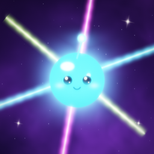
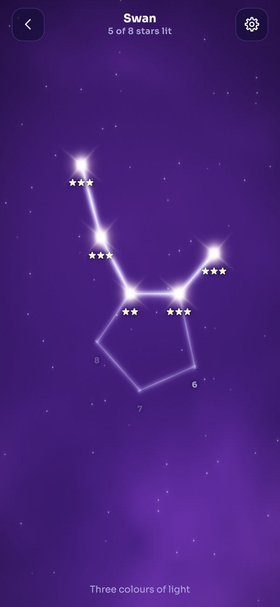
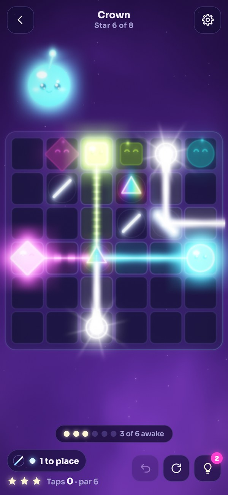
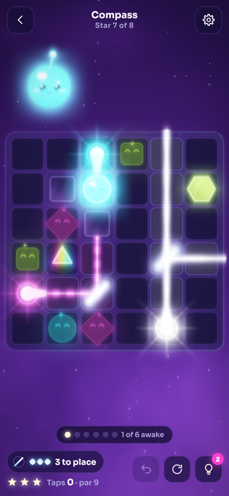
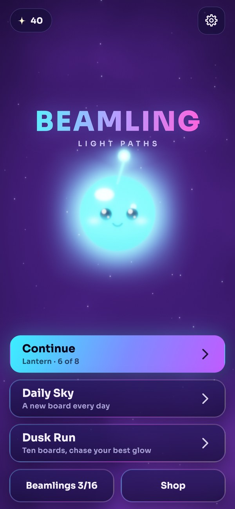

Light Paths
Tiny creatures are asleep in the dark. Turn the mirrors, split the light, and watch each one wake up glowing. Quiet, colourful, and never in a hurry.
iPhone, iPad and Android. Free to play with optional ads.



Every board is a small glowing machine. Light leaves a lamp, bounces, splits, changes colour, and has to reach every sleeper. Nothing times you. Nothing ends early.
Tap glass to turn it. Place spare mirrors from your tray anywhere on the board. Splitters send light two ways at once.
White light is all three colours at once. A prism sorts it out; a tint crystal lets only one colour through.
Cyan flows, magenta dashes, lime dots, and each sleeper has its own shape, so colour is never the only clue.

Finish a constellation and its beamling joins you. Keep a daily streak to meet the evening ones. Pick a favourite and it keeps you company on every board.
Yes. Beamling is free to play. It shows ads: you can choose to watch a short video for a hint or a little stardust, and a closable ad can appear after some finished boards. A one-time purchase removes the forced ads.
No. Every board is made on your device, so you can play on a plane.
No. Boards are generated by the game, and every one is checked to be solvable before you see it. The Daily Sky is the same board for everyone on a given day.
Yes. Calm motion slows the sky and trims the sparks, and you can switch sound, music and haptics off separately.
Soon. Store links will appear here.